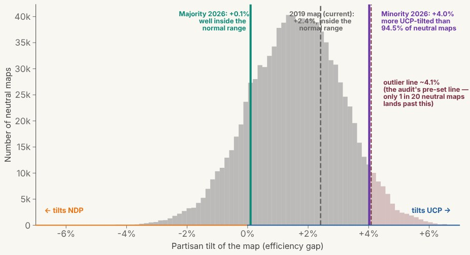

Every finding behind the main page, in full: what was found, what it could show, what Canadian practice expects, and its limits, including what the law does with it. The findings that ran against the audit stay right beside the ones that support it.
On the map
1. Airdrie: one city of 85,805, four districts
What we found. The minority map splits the City of Airdrie into four pieces. Airdrie has 85,805 people (2024 municipal census), one council, one tax bill and one school division. Every civic system treats it as a unit. The law caps each electoral division at one-and-a-quarter times the provincial average, so Airdrie needs at least two divisions. The majority map gives it two. The minority gives it four: north to Olds-Three Hills-Didsbury, east to Airdrie East, west to Calgary-Foothills-Airdrie West, and centre-south to Calgary-Airdrie. Airdrie East takes more than half the city, and nine in ten of its people are Airdrie residents. Nearly all the rest of the city is stapled to two Calgary-edge districts, where Calgary residents outnumber Airdrie’s. The north piece holds about 350 people. The split clears the first bar of our pre-registered cracking test (academic report §5.3.2), a test whose rules we fixed in writing ahead of time: more pieces than the city’s size requires. It fails the second, that Airdrie’s residents be outnumbered in every piece, because of Airdrie East. By the test’s own rule, that is no cracking signature. The majority’s two-way split fails both bars.

What it could show. For the part of the city outside Airdrie East, this is the textbook definition of cracking: splitting a community so thinly that it decides nothing. An Airdrie resident with a question for her MLA has to know which part of the city she lives in before she can call the right office. The PTA at her child’s school cannot send a single delegation to one MLA on a school-funding question. It has to coordinate four delegations to four offices, and three of those MLAs answer first to voters outside Airdrie. If you wanted to dilute a fast-growing, politically contested city, this is what it would look like.
What Canadian practice expects. Canadian commissions treat municipal integrity — keeping a city whole — as a core anchor for community of interest, the shared ties the Act asks boundary bodies to weigh. Splitting a city this size in two is routine. Splitting it four ways, leaving nearly half its residents outnumbered, is not. And the same commission’s majority draft proves a two-way split was available, on the same geography.
Limits and the law. The Electoral Boundaries Commission Act allows municipalities to be split. Community of interest is one factor among several the Act lists, and it does not bind. The Supreme Court of Canada’s Saskatchewan Reference, the leading case on effective representation, tells courts to defer to how boundary bodies weigh those factors. Our review found no Canadian decision striking down a map for splitting a city. Both maps are legal. The four-way split is a choice, and under Canadian law, choices inside the statute’s wide lanes belong to the drawer. (Legal lesson 1: the statute’s factors are discretionary, and courts defer.)
2. The three boundaries the chair called out
What we found. The commission’s own chair — appointed under the same Act, working from the same submissions — flagged four boundaries on the minority map as geographically anomalous, among them these three: the Rocky Mountain House–Banff Park extension into uninhabited national-park land; the lasso-shaped corridor of Calgary-Nolan Hill–Cochrane; and the reach of Olds–Three Hills–Didsbury into north Airdrie. In the commission’s official final report, the chair called the park extension “a bad faith effort” to claim a population protection written for remote communities where people actually live. The same chair raised zero such flags against the majority map. That is not an independent verdict between the two maps: he signed the majority report, so criticism running only against the minority is what you would expect. What gives the flags weight is our own blind geometric tests, which take no side. They independently confirmed anomalous geometry for three of the chair’s four geometric flags. (The fourth, Calgary-Foothills-Airdrie West, did not meet our confirmation threshold; his published criticism covers seven boundary configurations in total.)
What it could show. An insider — the person legally responsible for the process — watched these lines being drawn and alleged, in public, that a legal protection was being gamed. That is as close to direct evidence as this record gets.
Context. Spotting a gerrymander — lines drawn for a party’s advantage — began with bizarre shapes, and corridors and uninhabited extensions are the classic signatures. In fairness, the Banff arrangement has a defensible geography under the odd name and the odd shape. The town of Banff sits inside a federal park it cannot grow into, and grouping the townsite with Canmore has sound community-of-interest logic. Our Banff analysis credits that two-sided story in full. It also shows why the chair’s objection stands anyway: it is aimed at the empty-park extension, which the townsite’s placement does not touch.
What Canadian practice expects. Commissioners disagree in their reports all the time. A chair accusing colleagues of bad faith in the official final report is rare. In the cycles we reviewed, we found no other instance.
Limits and the law. The chair’s words are opinion, inside a report with no legal force. “Bad faith” in a commission report is an accusation, not a ruling: no tribunal ever weighed it. Under the Act, both reports became advisory the moment they were filed — advice, and only advice. The legislature could set them both aside. It did. (Legal lesson 2: commission reports bind no one — the legislature holds the pen.)
Explainer: shape analysis and what s.15(2) protection is for
3. North-east and central Calgary: larger districts where the NDP is strongest
What we found. Same zone of Calgary, same commission, same constraints — and on one map it comes out about 8.5% larger than on the other. In the city’s north-east and central districts, where thirteen of seventeen seats went NDP in 2023, the minority map’s divisions hold on average 11.5% more people than the provincial average. The majority’s hold 2.8% more. The pattern meets our pre-registered packing-signature test (academic report §5.3.1).
What it could show. This is packing: crowding one party’s voters into fewer, larger districts, so each of their ballots weighs less. Packing and cracking (finding 1) are the two classic gerrymandering moves. Both shrink a party’s seat count below its share of the vote.
What Canadian practice expects. Some spread from the average is normal inside the legal band, but Canadian commissions justify it with community-of-interest reasons. The minority’s published reasons for this zone are among those that fail an independent check. See finding 11.
Limits and the law. Every one of those districts sits inside the Act’s ±25% population band, and Canadian law has no cause of action — no grounds to sue — for partisan effect. Section 3 of the Charter protects citizens’ effective representation: a meaningful voice, not just equal numbers. It does not promise parties that votes will turn into seats in proportion, and no Canadian court has read it that way. (Legal lesson 3: inside the band, size asymmetry is lawful discretion — partisan effect is not a recognized legal harm.)
4. Worse at the one thing the law actually measures
What we found. Take each district, measure how far its population sits from an equal share, and average the gaps: that is the mean absolute deviation, or MAD. On the commission’s own population tables, the minority map’s districts stray further from equal than the majority’s — a MAD of 4,707 people against 3,180, 48% wider. On 2021 census numbers the gap is smaller. The two maps’ mean deviations are almost the same, while the minority’s median deviation (the gap for the district in the middle of the pack) is still wider: 3,938 against 2,827. Against neutral maps — drawn by computer, with no stake in who wins — that balance each district to within ±12.5%, that median spread sits at the 99th percentile, wider than nearly all of them. Against neutral maps allowed the statute’s full ±25%, both commission maps sit at the bottom of the range.
What it could show. Vote equality — every vote weighing the same — is the one value the statute puts a number on, and on the commission’s own figures the minority map gives up more of it than the majority drawn beside it. The common defence — “they had to draw weird boundaries to equalize population” — runs backwards here. The minority map is the less equal of the two.
What Canadian practice expects. Canadian commissions treat the deviation band as a limit, not a budget. Since the Saskatchewan Reference era, the long-run trend has been toward tighter equality, not looser.
Limits and the law. The ±25% band is the only number in the statute, and no district on either map crosses it. Inside the band, the law does not rank maps. A wider spread and a tighter one are legally the same. (Legal lesson 4: the statute contains exactly one number, and this map complies with it.)
5. Municipal anchoring: both maps inside the norm
What we found. How often does a district line follow a city or town boundary? Both maps do it at rates inside the Canadian norm of 70–85%: the majority at 80%, the minority at 72% (Quebec: 78%, Ontario: 82%, BC: 71%). On overall rates, this test does not separate the two maps. What stands out is narrower. Where the minority does leave pre-existing civic lines, the departures cluster at the exact urban-edge zones the chair flagged — Rocky Mountain House–Banff Park, Nolan Hill–Cochrane, Olds–North Airdrie — where pairing urban and rural voters most directly affects which party wins the seat.
What it could show. When a district boundary follows a city or town line, the property-tax line, the school-division line and the provincial-election line all match, and voters can tell where their district begins and ends. On that measure the two maps look alike overall. The difference is where the minority’s departures fall.
Limits and the law. Not on its own. Both maps sit inside the Canadian norm, and the Act sets no anchoring threshold. Where the minority’s departures fall matters only alongside the chair’s flags and the geometry tests elsewhere on this page.
Explainer: what municipal anchoring measures, and what it can’t show
![Bar chart comparing four pre-registered structural-fairness tests side by side, plus a summary score panel. The majority map bars sit at zero or well inside safe ranges. Three of the five panels have a pre-registered failing line (dashed red): NE/central Calgary crowding, the chair-flagged boundaries the audit confirmed (three of his four), and the summary scorecard. On those three, the minority bar crosses the line and the majority bar stays inside it. The population-spread and Airdrie panels have no failing line; population spread shows the majority at 3,180 and the minority at 4,707 people from the ideal district size. The fifth pre-registered test, municipal anchoring, was neutral for both maps — both fell within the 70–85% Canadian norm — so it is not plotted; the summary panel scores the minority 4 of 5 with anchoring counted as neutral.](./images/lane2_bars.webp)
In the simulation
6. Fewer than 100 maps in 1,010,000
What we found. Split the vote dead even, 50/50, and ask each map how many seats it hands the UCP. Across the million neutral maps the median answer is 44.8%, and the ceiling is 51.72%. Only 69 of the 1,010,000 go past the minority map’s 51.69%. The 2019 enacted map sits at 46.0% (78th percentile), the 2026 majority at 46.1% (78th percentile). The minority sits at 51.7%: the 99.99th percentile, at the far edge of the crowd. Two other pre-registered fairness measures agree. On each, the minority map lands deeper in the tail than 98 to 99.9 per cent of the neutral maps, all leaning the same way — toward the UCP. What does that mean in seats? Replay the actual 2023 voting patterns and the minority map’s geometry gives the UCP 60 of 89 seats. On the majority map, 55.
What it could show. Neutral processes essentially never produce this map. The majority map is the kind of map a neutral procedure turns out routinely. The minority map is the kind you have to aim to draw.
What Canadian practice expects. No Canadian commission has ever been required to test its map against a neutral ensemble. Here we are importing a standard the process itself never had to meet. That is exactly why the result is informative, and exactly why it binds nobody.
Limits and the law. Two reasons, one legal and one statistical. Legal: as far as our review found, no Canadian court has yet weighed ensemble evidence. In the United States, the Supreme Court held in Rucho v. Common Cause (2019) that even strong statistical evidence of partisan gerrymandering is not for federal courts to police. A percentile is a description, not a threshold crossed. Statistical: the ensemble respects population and contiguity (each district a single connected piece), but it does not enforce every statutory criterion the commission worked under (s.15(2) hybrid protections, community of interest, municipal anchoring). So its percentiles measure extremity against that reference distribution, not against “everything a legally compliant commission might have drawn.” A strong outside check; not a perfect one. One further honest limit: a real electorate is not frozen at 50/50. With a big enough swing, voters can swamp any map’s structural lean. The 50/50 test isolates the map’s contribution to the outcome, not the outcome itself. (Legal lesson 5: the best evidence type in the field has no legal home in Canada.)
Explainer: how the what-if machine works and how to read a percentile
7. The test that missed
What we found. The fourth partisan-fairness metric is the efficiency gap: a single number for how lopsidedly a party’s votes turn into seats, built from wasted votes (the votes a winner had beyond what was needed, plus every vote cast for a loser). For the minority map it came in at +4.0%, the 94.5th percentile. Our pre-registered outlier line is the 95th percentile (about +4.1% on Alberta’s simulated distribution). It missed. It leans toward the UCP, but it falls below the line, and every table in this report shows it that way. The majority map’s efficiency gap is +0.1% (16.5th percentile).
What it could show. On its own, almost nothing. That is exactly why it is in the log.
Limits and the law. We do not claim it as evidence at all. This entry is here to show the record was counted honestly. Pre-registration cuts both ways: the same locked line that gives the other metrics their force makes this one a miss. And a miss it stays. (Epistemic lesson: the threshold was set before the answer was known — so the answer is allowed to be “no.”)

8. One in 568,000, and what that number is not
What we found. Picture a drawing process with no agenda. How likely is it to produce the minority map’s combined four-metric profile? The chance is bounded at about one in 568,000. That is a deliberately cautious ceiling: we doubled our own margin to cover the second analytical channel we examined, so the true odds are at most this common, and likely rarer. Why double it, rather than quote the stronger single-test number? Because we gave ourselves two chances to find something rare — two channels, two chances for luck to look like a signal — so the odds are multiplied by two before they are quoted. The doubling holds no matter how the two channels relate, and that was the exact objection that killed the old figure. The four measures inside the simulation count as one look, not four, because they are combined into a single joint score before any probability is computed. (For the technical record: p ≤ 1.76×10⁻⁶, a Bonferroni-corrected, dependence-robust upper bound.) This report used to carry a stronger number: roughly one in fifteen million. That figure combined two channels (the four-metric joint score and the Swing-Zone Allocation Test) that were not statistically independent, and one of the channels later failed a corrected spatial null (finding 10). The Fisher combination was retired as the headline on 2026-06-10. The correction is permanent, and it stays on display.
What it could show. You will want this number to mean “the probability the map is innocent.” It is our strongest single number, and the pull to read it that way is enormous.
Context. The number is well defined, and defensible as what it actually is: the probability of the map’s measured profile turning up under a neutral drawing process. In statistics, confusing P(evidence given innocence) with P(innocence given evidence) has a name, the prosecutor’s fallacy, and it has sent innocent people to prison. This report refuses the swap. How rare the map is under the neutral null — the no-agenda baseline — is not the probability of wrongdoing once the evidence is in (what statisticians call the posterior). For that you would need things no one has, like the base rate of eccentric-but-sincere drafting.
What Canadian practice expects. No Canadian legal standard takes in a number like this. There is no threshold for it to cross, because the law never defined one.
Limits and the law. A one-in-568,000 map can still, in principle, come from unusual but honest judgment. The number measures how far outside neutral practice the map sits. It cannot see motive, and this report will not pretend it can. What we do claim is the weaker statement, and it is well supported: routine drafting variation is not a plausible explanation for this profile. What the explanation is, we put in your hands. (Legal-epistemic lesson: no probability of a map is a probability of intent.)
9. We tried to knock down our own result
What we found. We mounted three attacks on our own headline. The results were mixed, and all are reported in full. First, the sampler swap: we replaced the simulation’s mathematical engine with a structurally different one (a spanning-forest sampler, pre-registered at OSF as registration he53s and executed 2026-07-10), and the tail position survived. Every metric’s percentile moved by less than one point, a pre-registered ROBUST verdict on all four. Second, the software swap: an independent implementation (the R redist package) also finds zero plans reaching the minority’s value at comparable sample sizes. Third, the mechanism test, and here our claim failed. We tested whether the flagged geometry of Act I (the corridors, the park extension, the splits) is the specific mechanism producing the Act II seat advantage. The answer is no. Both lanes point at the same map and lean the same way, but the claim that the geometry is the mechanism did not survive its falsification test, the test built to knock it down. The report says so.
What it could show. The outlier belongs to the map, not to our tools.
Limits and the law. Ruling out artifacts is not ruling in design. Surviving every attack we could mount establishes that the map is genuinely, robustly extreme. It says nothing about why. (Epistemic lesson: robustness strengthens the description, never the accusation.)
10. The signals that pointed the other way
What we found. Three entries in the log do not help our story. All are reported. One the minority passed outright. The neighbour-drain test looks for the classic adjacency pattern, where packed districts sit right beside thin-margin ones. The minority shows 1 coupled chain signal against the majority’s 2 (and the 2019 enacted map’s 5): a genuine pre-registered PASS, and the single test where the minority beats the majority on the numbers. The pass is real but narrow. The minority gets its partisan effect through hybridization — splitting cities into districts that mix urban and rural voters inside single ridings — and an adjacency test cannot see that, because the packing and cracking happen within districts rather than between them. Two we retired. The Swing-Zone Allocation Test asked whether swing-zone voting areas were allocated to districts in a partisan pattern. It looked significant (p = 0.0024) until we corrected its null, the baseline of chance it is measured against, for spatial clustering: neighbouring voting areas vote alike, which violates the test’s assumption that each area is independent. After the correction it returns p ≈ 0.19, not significant, and on 2026-06-13 it was retired to exploratory status. And the Fisher combination that once produced the one-in-fifteen-million headline assumed an independence its channels did not have. It was retired 2026-06-10 (finding 8).
What it could show. As first computed, the retired tests suggested the specific boundary choices — not just the overall map — were partisan-loaded. After correction, they suggest nothing.
Limits and the law. Two of these were our own instruments failing, not the map’s, and the third points in the map’s favour. They are in the record because a record that keeps only the convenient entries is not a record. (Epistemic lesson, stated twice in this report on purpose: the null can win.)
Explainer: why neighbours voting alike breaks naive statistics
In the conduct
11. Five of six reasons don’t survive checking
What we found. The minority commissioners published reasons for their contested redraws. Five of the six fail an independent check. (A seventh redraw we had listed earlier turned out to rest on a federal-boundary claim that cannot be found in the minority report; we removed it rather than leave it standing as a weak claim.) The point is not that the minority’s reasoning is invented. In most of these cases the general claim is true, and a boundary honouring it could have been drawn. What the data does not reach is the particular line the minority actually drew. It defends Calgary-Nolan Hill–Cochrane on the idea that Cochrane residents “move fluidly” into Calgary. Statistics Canada’s 2021 journey-to-work data shows about a third of Cochrane’s workers commute somewhere in Calgary, while roughly half work within Cochrane: a real city-to-city tie, but one that says nothing about the Nolan Hill neighbourhood the corridor actually reaches. Airdrie’s commute to Calgary (about 76 percent of its out-commuters) and its rapid growth are both real, and could have supported a new Airdrie-area seat. Neither requires splitting the city four ways. Chestermere sends 86 percent of its out-commuters to Calgary, yet it shares no school division or transit system with the specific Calgary district the minority slices part of it into. And the minority’s “shared schools” argument for pairing Red Deer with Sylvan Lake does not hold. Sylvan Lake is in Chinook’s Edge School Division; the City of Red Deer is in Red Deer Public.
What it could show. Reasons that do not survive checking look like rationalizations: reasons found after the line, not before. In each case the evidence pointed to a boundary the minority could have drawn. The line it drew is a different one.
What Canadian practice expects. Commissions publish reasons precisely so the public can weigh them. Reasons that collapse against free, public Statistics Canada data defeat the point of publishing them.
Limits and the law. No Canadian law requires a commissioner’s reasons to survive an independent check, and a failed reason fits sloppiness as easily as pretext. Courts reviewing boundaries ask whether the outcome denies effective representation, not whether the reasoning in the file was tidy. (Legal lesson 6: bad reasons for a lawful line are still a lawful line.)
12. The commission that couldn’t sign one map
What we found. The commission split: two final reports, two incompatible 89-seat maps, filed the same day. The three-commissioner majority included the chair. The two-commissioner minority — the commissioners the government nominated — produced the map every previous finding describes. Our instruments cut both ways across that divide. The majority report asserted that the minority’s changes in five places (Airdrie, Cochrane, Chestermere, Red Deer and St. Albert) had no public support in the 1,345 submissions (final report, pp. 59 and 62). We keyword-searched the full archive (93.4% machine-parsed) and found the majority right on three of the five, wrong on Chestermere, which drew aligned submissions, and partially wrong on Red Deer. Two configurations the majority attacked on other grounds, Rocky Mountain House–Banff Park and Olds–Three Hills–Didsbury, also had documented public support. The blanket claim is demonstrably overbroad. That finding cuts against the majority, not the minority, and it is in this log for exactly that reason. The criticism also ran the other way, and the log records that too. The minority report charges the majority with “an inclination to delete or mangle rural electoral divisions and, in effect, reduce effective rural representation” (minority report, p. 356). Our one majority-targeted structural counter-test to date asked whether the majority’s rural districts are engineered corridors of isolation. It came back supporting the innocent, geographic explanation (exploratory; the design and its limits are published). Then, the same day the charge surfaced, we counted the rural divisions themselves (exploratory; hypotheses frozen in the script before it ran; every classified name published). The direction reverses. Against 2019’s 31 rural-anchored divisions, the majority has 28: it absorbs three into city-named districts, merges six into three and adds three new ones. The minority has 23: it absorbs seven and merges two into one. A stricter version of the classifier gives the same order. Both maps thin rural representation relative to 2019, and that is the true core of the charge. But on the measure the accusation itself names, the minority map does more of what it accuses the majority of. The same page makes a second charge that can be measured: that the majority “declined to use” the Act’s ±25% flexibility in rural Alberta, a flexibility the minority insists is “not a benign allowance for errors in mapmaking” but “a deliberate instruction”. That one holds. The majority’s rural divisions average 6% below the provincial mean, with only four drawn more than 10% light. The minority’s average 12% below, with eleven drawn more than 10% light. Tested together, the two charges describe two design philosophies, not one vice: more-but-fuller rural divisions on the majority, fewer-but-lighter on the minority. Both directions of every cut are in the log.
What it could show. A process designed to converge produced two answers, and the outlier map came from the government’s nominees. You are invited to find that suggestive. Many will.
What Canadian practice expects. Consensus reports are the norm, and the machinery of the Act assumes one map arrives. A split commission, with the chair publicly accusing colleagues, is not a scenario the statute was written for.
Limits and the law. Nomination is not instruction. We found no evidence of coordination between the government and its nominees, and none can be inferred from appointment alone. Commissioners, whoever named them, have gone their own way before. (Epistemic lesson: provenance raises the question; it cannot answer it.)
Explainer: how commissioners are appointed and what nomination does and doesn’t imply
13. When the process might have answered, it was replaced
What we found. The commission held hearings in sixteen communities, received 1,345 written submissions, and reversed its own interim proposal on the strength of 80-plus of them: a system visibly responding to what the public said. Four weeks after its split reports arrived, that system was replaced. Government Motion 37, introduced April 16 and passed April 21, 2026, set both reports aside. It created a Select Special Committee of six MLAs — four UCP, two NDP, chaired by UCP MLA Brandon Lunty — to oversee a 91-seat map due November 2, 2026 (committee page). The committee is not required to hold public hearings, and per CBC’s reporting it will not hold hearings on the map it produces. No draft will be released for public challenge before the map is final. It is served by an Independent Advisory Panel, chaired by retired Court of Appeal justice Brian O’Ferrall. The panel advises; the MLAs decide. On the floor, the government presented the takeover as faithfulness to the commission — “We are adopting the recommendations from the report” (Government House Leader, Hansard, April 16, 2026) — while the opposition described the same motion as presenting the “minority report in slow motion.” Against the report itself, that claim of faithfulness reads narrower. The majority asked the Legislature to adopt its 89-seat map. Its seat-count fix was aimed at future commissions. And the one recommendation that did propose 91 seats was the chair’s alone: “My majority colleagues do not agree with me on this point.”
What it could show. When the independent route failed to deliver a usable answer, the government took the pen. And the vehicle it chose removed every mechanism by which the public could contest what it writes before it becomes law.
Context. The design gives up each transparency feature the redistricting research treats as protective: published drafts, public hearings, arm’s-length drafters. Civil-liberties observers (CCLA) raised the concern about politicization independently of this audit.
What Canadian practice expects. This is the deepest norm in modern Canadian redistribution: politicians do not draw their own districts. Alberta last broke it in 1992, when a committee of MLAs drew the 1993 map. The Court of Appeal let that map stand in 1994 but faulted the committee for being unable to explain several of its boundaries, and in 1995 the Act was amended to change how commissions are appointed. Our November tests (on the main page) measure the committee’s process against exactly the features it is not required to provide.
Limits and the law. Every step is lawful. The Act makes the commission’s reports advisory. It sets no minimum notice or comment period, and it imposes no hearing or draft-release requirement on what follows. Under parliamentary sovereignty the legislature may lawfully do precisely what it did. (Legal lesson 7: the process that could have created accountability is optional — and opting out is legal.)
Explainer: the Act’s process from commission to committee, end to end
14. The independent-commission norm, set aside, and the time it happened before
What we found. Canada spent roughly sixty years building independent boundary commissions. They were the institutional answer, since the federal reform era of the 1960s, to the once-routine practice of governing parties drawing their own ridings. In May, Duane Bratt, Professor of Political Science at Mount Royal University, described the process to the author as without precedent in Canada. That claim is wrong. In 1992 Alberta set its deadlocked commission’s work aside and gave the map to a committee of MLAs, whose map was used in the 1993 election. What is new in 2026 is narrower. The commission did not deadlock — a majority signed a report, which the Act treats as the commission’s report — and it was set aside anyway. In some jurisdictions a commission’s map takes effect unless the legislature overrides it. In Alberta, it takes a bill.
What it could show. The opposition named it on the floor: “retaliation against the independent Electoral [Boundaries Commission].” The injury is not one map. It is the demonstration that the guardrail was a convention, a habit and not a law — and conventions bind only governments that consent to be bound. Nothing prevents the next government, of any party, from citing this cycle as precedent.
What Canadian practice expects. The federal process and the provinces use arm’s-length commissions, with exceptions: Alberta in 1992, and Quebec, whose National Assembly legislated its own 127-seat map in June 2026 after the Supreme Court struck down its pause of the commission. Alberta’s 2026 cycle departed from that standard by simple majority vote.
Limits and the law. Constitutional conventions bind politically, but courts will not enforce them; the Supreme Court said as much in the 1981 Patriation Reference. That does not put the process beyond the courts’ reach. In 2017 Nova Scotia’s Court of Appeal found a map unconstitutional because the government had stifled its commission’s independent view. In 2026 the Supreme Court struck down Quebec’s law pausing its commission (Quebec (AG) v. Lalande, 2026 SCC 13). What a court reviews is the enacted map, under section 3. (Legal lesson 8: norms are not law, but how a map is made can still matter in court.)